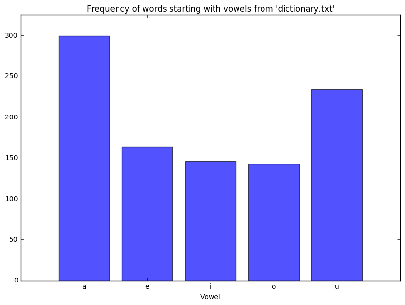

(The dataset referenced in the following post is available here)
For bar chart data visualizations, it’s helpful to have a decscription of what each category represents. This can be easily accomplished in matplotlib. To illustrate, we’ll use dictionary.txt, which is a collection of words, one word per line, to create a bar chart representing the number of times a word starting with a vowel is encountered (any word starting with ‘a’, ‘e’, ‘i’, ‘o’ or ‘u’). Each bar will be labeled with the vowel corresponding to the word count in question:
import matplotlib
import string
import matplotlib.pyplot as plt
# file containing words, one word per line =>
fwords = 'dictionary.txt'
# setup tracking dict to count occurances =>
word_cntr = {vowel:0 for vowel in ('a','e','i','o','u')}
with open(fwords, 'r') as f:
for word in f:
word = word.lower()
word0 = word[0]
if word0 in ('a','e','i','o','u'): word_cntr[word0]+=1
# word_cntr => {'i': 146, 'a': 299, 'e': 163, 'o': 142, 'u': 234}
Next, pass the content of word_cntr to the plt.bar construct, and render the graphic with plt.show:
# sort `word_cntr` aplhabetically, then split x (vowels)
# and y (counts) into separate iterables =>
keyvals = sorted(word_cntr.items())
x, y = zip(*keyvals)
# bar chart layout =>
x_pos = [1,2,3,4,5]
xlabels = ['a','e','i','o','u']
plt.bar(x_pos, y, align='center', color='blue', alpha=.68)
plt.xticks(x_position, xlabels)
plt.axis([0,6,0,325])
plt.title("Frequency of words starting with vowels from \'dictionary.txt\'")
plt.xlabel('Vowel')
plt.show()
The rendered graphic should look identical to the following:

A few matplotlib usage suggestions:
-
matplotlib.rcParams[‘figure.figsize’] can be used to specify the dimesions of the data visualization, i.e.
matplotlib.rcParams['figure.figsize'] = (10, 7). -
The data visulaization can be written to file as .pdf or .png using
plt.savefig. A useful optional argument forplt.savefigisbbox_inches='tight', which trims excess whitespace around the perimeter of the graphic, i.e. `plt.savefig(‘barchart.png’, bbox_inches=’tight’)
Happy plotting!